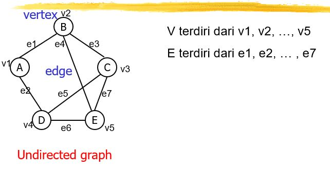
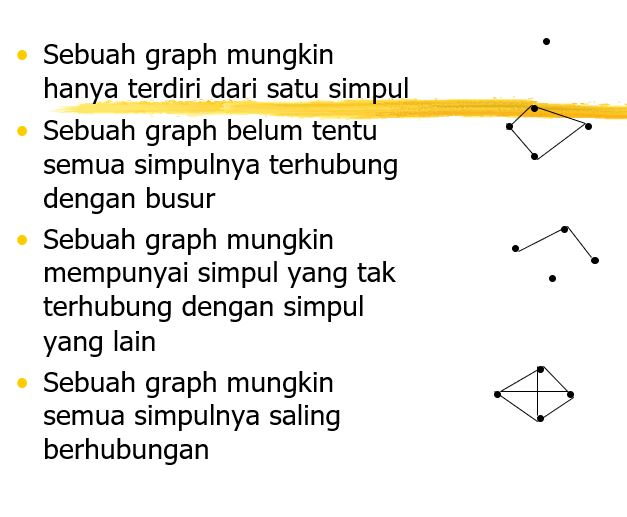
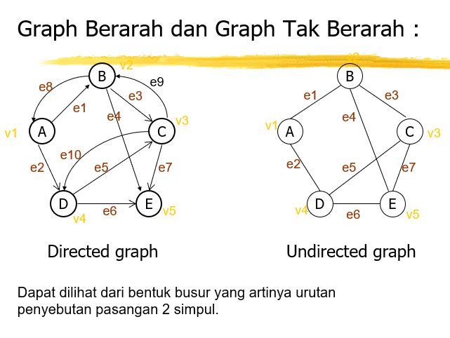
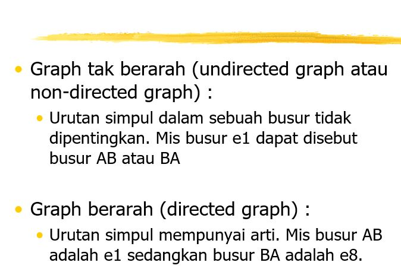
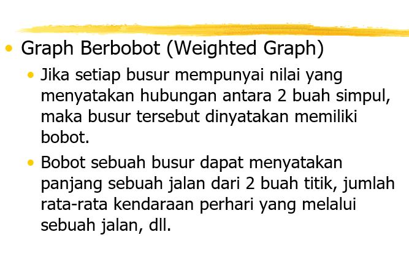

Welcome To My Blog
Sebuah Blog yang ditulis oleh saya sendiri

Graf
Graf dalam Struktur Data
Graf adalah salah satu struktur data yang digunakan untuk merepresentasikan hubungan antara objek-objek. Graf terdiri dari simpul-simpul (node) yang terhubung oleh tepi (edge). Setiap simpul dapat memiliki beberapa tepi yang menghubungkannya dengan simpul lain.
Jenis-jenis Graf
1. Graf Berarah (Directed Graph): Graf berarah memiliki arah pada setiap tepi yang menghubungkan simpul-simpulnya. Artinya, perjalanan dari satu simpul ke simpul lainnya dapat dilakukan hanya dalam satu arah.
2. Graf Tidak Berarah (Undirected Graph): Graf tidak berarah tidak memiliki arah pada tepi-tepinya. Artinya, perjalanan antara dua simpul dapat dilakukan dalam kedua arah.
Representasi Graf
Ada beberapa cara untuk merepresentasikan graf dalam struktur data, di antaranya:
1. Representasi Matriks Adjasi: Graf direpresentasikan dalam bentuk matriks dua dimensi. Baris dan kolom matriks menunjukkan simpul-simpul graf, sedangkan nilai di dalam matriks menunjukkan apakah ada tepi yang menghubungkan dua simpul atau tidak.
2. Representasi Daftar Adjasi: Graf direpresentasikan dalam bentuk daftar yang menunjukkan simpul-simpul yang terhubung dengan setiap simpul. Setiap simpul memiliki daftar simpul-simpul yang terhubung dengannya.
Operasi pada Graf
Beberapa operasi yang umum dilakukan pada struktur data graf meliputi:
1. Menambahkan simpul ke dalam graf.
2. Menambahkan tepi antara dua simpul.
3. Menghapus simpul dari graf.
4. Menghapus tepi antara dua simpul.
5. Mencari jalur antara dua simpul.
6. Melakukan penjelajahan graf (DFS dan BFS).
Aplikasi Graf
Graf digunakan dalam berbagai aplikasi, di antaranya:
1. Jaringan sosial: Graf digunakan untuk merepresentasikan hubungan antara pengguna dalam jaringan sosial.
2. Sistem navigasi: Graf digunakan untuk merepresentasikan jalan-jalan dan rute dalam sistem navigasi.
3. Perencanaan jadwal: Graf digunakan untuk merepresentasikan ketergantungan antara tugas-tugas dalam perencanaan jadwal.
4. Pemetaan jaringan komputer: Graf digunakan untuk merepresentasikan hubungan antara perangkat-perangkat dalam jaringan komputer.
Contoh Contoh Graf





Penulis Muhamad Dzikrulloh

Struktur data adalah pengaturan data di dalam memori komputer. dengan cara menyimpan, mengambil, dan menyusun data. Struktur data memungkinkan data yang ada di komputer lebih mudah diakses dan diperbarui.
Read More..
Adalah tipe data yang hanya bernilai benar (true) atau salah (false). Jangkauan (nilai yang mungkin) hanya 2 yaitu true atau false. ADT (Abstract Data Type) atau Tipe Data Bentukan
Read More..
• Array dapat didefinisikan sebagai suatu himpunan hingga elemen yang terurut dan homogen. Terurut : Dapat diartikan bahwa elemen tersebut dapat diidentifikasi sebagai elemen pertama, elemen kedua dan seterusnya sampai elemen ke-n.
Read More..
• Penyimpanan dan pengambilan data yang sangat efektif apabila data yang terakhir masuk adalah data yang akan diambil pertama kali. • Tumpukan memungkinkan akses ke satu item data saja, yaitu item terakhir yang disisipkan.
Read More..
1. Queue (antrian) adalah struktur data dimana proses pengambilan dan penambahan element dilakukan pada ujung yang berbeda. 2. Queue mengikuti konsep FIFO.
Read More..